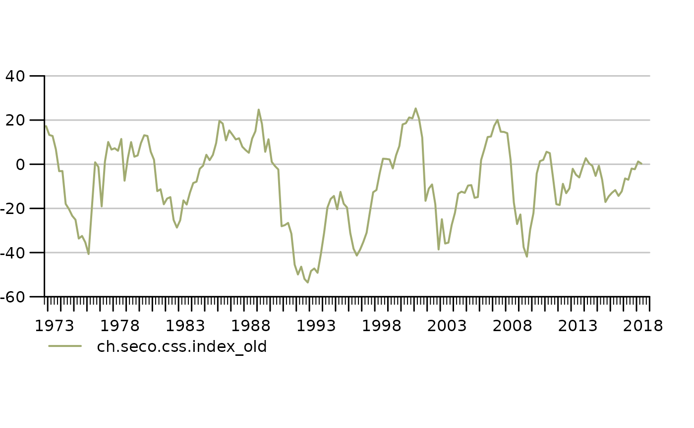

Read data generated by the Swissdata project
read_swissdata.RdRead data from swissdata compliant .csv files and turn them into a list of time series.
Usage
read_swissdata(
path,
key_columns = NULL,
filter = NULL,
aggregates = NULL,
keep_last_freq_only = FALSE
)Arguments
- path
character full path to dataset.
- key_columns
character vector specifying all columns that should be part of the key. Defaults to the dim.order specified by swissdata.
- filter
function A function that is applied to the raw data.data table after it is read. Useful for filtering out undesired data.
- aggregates
list A list of dimensions over which to aggregate data. The names of this list determing which function is used to calculate the aggregate (e.g. sum, mean etc.). Defaults to sum.
- keep_last_freq_only
in case there is a frequency change in a time series, should only the part of the series be returned that has the same frequency as the last observation. This is useful when data start out crappy and then stabilize
Details
The order of dimensions in key_columns determines their order in the key The resulting ts_key will be of the form <swissdata-set-name>.<instance of key_columns[1]>...
Examples
ds_location <- system.file("example_data/ch.seco.css.csv",package = "tstools")
tslist <- read_swissdata(ds_location,"idx_type")
tsplot(tslist[1])
